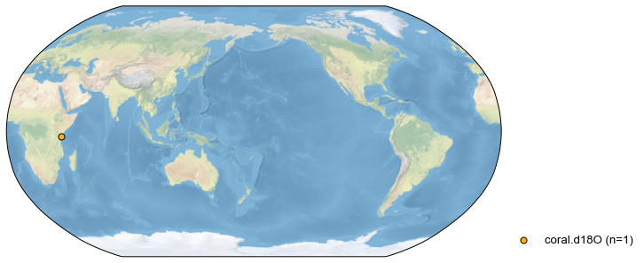
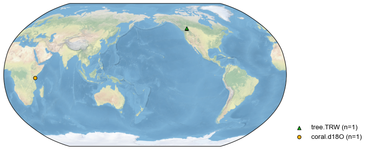
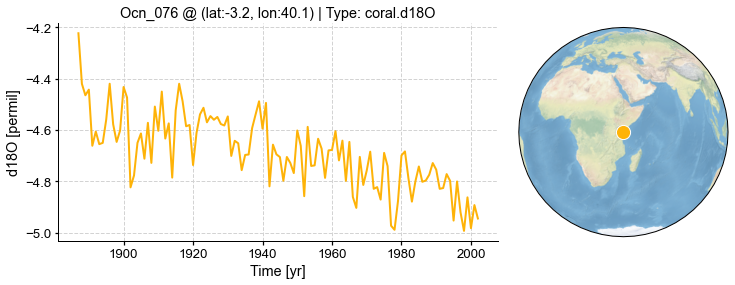
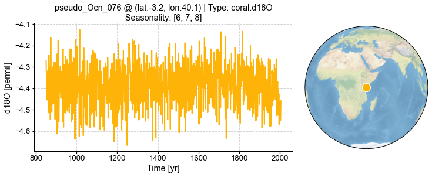
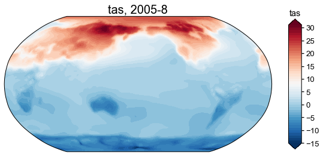

Basic workflows
Contents
Basic workflows#
[1]:
%load_ext autoreload
%autoreload 2
import cfr
Create a reconstruction job object#
[2]:
job = cfr.ReconJob(verbose=True)
print(job)
>>> job.configs:
{}
<cfr.reconjob.ReconJob object at 0x7fc438664bb0>
Load a proxy database#
[10]:
job.load_proxydb('./data/pages2k_dataset.pkl', verbose=True)
>>> job.configs["proxydb_path"] = ./data/pages2k_dataset.pkl
>>> 692 records loaded
>>> job.proxydb created
[11]:
fig, ax = job.proxydb.plot(plot_count=True)

Filter a proxy database#
[12]:
# filtering a ProxyDatabase object returns a new ProxyDatabase object
pdb_tree = job.proxydb.filter(by='pid', keys=['NAm_153'])
fig, ax = pdb_tree.plot()

[13]:
# job.filter_proxydb() will, however, modify job.proxydb by default,
# unless we set inplace=False for a test
pdb_filtered = job.filter_proxydb(by='ptype', keys=['coral'], verbose=True, inplace=False)
fig, ax = pdb_filtered.plot()

[18]:
# for this test, we take only one coral record, since inplace=True by default, job.proxydb will be modified
job.filter_proxydb(by='pid', keys=['Ocn_076'], verbose=True)
fig, ax = job.proxydb.plot()
>>> 1 records remaining
>>> job.proxydb updated

[19]:
# we may add a ProxyDatabase into job.proxydb
job.proxydb += pdb_tree
fig, ax = job.proxydb.plot()

Annualize/seasonalize the proxy database#
[20]:
# we only annualize coral records
job.annualize_proxydb(months=[6, 7, 8], ptypes=['coral'], verbose=True)
fig, ax = job.proxydb.plot()
Annualizing ProxyRecord: 100%|██████████| 1/1 [00:00<00:00, 14.09it/s]
>>> 2 records remaining
>>> job.proxydb updated

[21]:
# let's check the time axis of the coral record
job.proxydb.records['Ocn_076'].time
[21]:
array([1887., 1888., 1889., 1890., 1891., 1892., 1893., 1894., 1895.,
1896., 1897., 1898., 1899., 1900., 1901., 1902., 1903., 1904.,
1905., 1906., 1907., 1908., 1909., 1910., 1911., 1912., 1913.,
1914., 1915., 1916., 1917., 1918., 1919., 1920., 1921., 1922.,
1923., 1924., 1925., 1926., 1927., 1928., 1929., 1930., 1931.,
1932., 1933., 1934., 1935., 1936., 1937., 1938., 1939., 1940.,
1941., 1942., 1943., 1944., 1945., 1946., 1947., 1948., 1949.,
1950., 1951., 1952., 1953., 1954., 1955., 1956., 1957., 1958.,
1959., 1960., 1961., 1962., 1963., 1964., 1965., 1966., 1967.,
1968., 1969., 1970., 1971., 1972., 1973., 1974., 1975., 1976.,
1977., 1978., 1979., 1980., 1981., 1982., 1983., 1984., 1985.,
1986., 1987., 1988., 1989., 1990., 1991., 1992., 1993., 1994.,
1995., 1996., 1997., 1998., 1999., 2000., 2001., 2002.])
Load climate modoel priors#
[22]:
job.load_gridded(
tag='prior',
path_dict={
'tas': './data/tas_sfc_Amon_iCESM_past1000historical_085001-200512.nc',
'pr': './data/pr_sfc_Amon_iCESM_past1000historical_085001-200512.nc',
},
center_period=(1951, 1980),
verbose=True,
)
>>> job.configs["prior_path"] = {'tas': './data/tas_sfc_Amon_iCESM_past1000historical_085001-200512.nc', 'pr': './data/pr_sfc_Amon_iCESM_past1000historical_085001-200512.nc'}
>>> instrumental observation variables ['tas', 'pr'] loaded
>>> job.prior created
Load instrumental observations#
[23]:
job.load_gridded(
tag='obs',
path_dict={
'tas': './data/gistemp1200_ERSSTv4.nc',
'pr': './data/GPCC_precip.mon.flux.1x1.v6.nc',
},
rename_dict={'tas': 'tempanomaly', 'pr': 'precip'},
center_period=(1951, 1980),
verbose=True,
)
>>> job.configs["obs_path"] = {'tas': './data/gistemp1200_ERSSTv4.nc', 'pr': './data/GPCC_precip.mon.flux.1x1.v6.nc'}
>>> instrumental observation variables ['tas', 'pr'] loaded
>>> job.obs created
[13]:
# note that the lon axis has been wrapped into the 0-360 range
job.obs['tas'].da
[13]:
<xarray.DataArray 'tas' (time: 1648, lat: 90, lon: 180)>
array([[[ nan, nan, nan, ..., nan,
nan, nan],
[ nan, nan, nan, ..., nan,
nan, nan],
[ nan, nan, nan, ..., nan,
nan, nan],
...,
[ nan, nan, nan, ..., nan,
nan, nan],
[ nan, nan, nan, ..., nan,
nan, nan],
[ nan, nan, nan, ..., nan,
nan, nan]],
[[ nan, nan, nan, ..., nan,
nan, nan],
[ nan, nan, nan, ..., nan,
nan, nan],
[ nan, nan, nan, ..., nan,
nan, nan],
...
[ 1.56 , 1.56 , 1.56 , ..., 1.56 ,
1.56 , 1.56 ],
[ 1.56 , 1.56 , 1.56 , ..., 1.56 ,
1.56 , 1.56 ],
[ 1.56 , 1.56 , 1.56 , ..., 1.56 ,
1.56 , 1.56 ]],
[[-1.0299653 , -1.0299653 , -1.0299653 , ..., -1.0299653 ,
-1.0299653 , -1.0299653 ],
[-1.0299653 , -1.0299653 , -1.0299653 , ..., -1.0299653 ,
-1.0299653 , -1.0299653 ],
[-1.0299653 , -1.0299653 , -1.0299653 , ..., -1.0299653 ,
-1.0299653 , -1.0299653 ],
...,
[-0.29999998, -0.29999998, -0.29999998, ..., -0.29999998,
-0.29999998, -0.29999998],
[-0.29999998, -0.29999998, -0.29999998, ..., -0.29999998,
-0.29999998, -0.29999998],
[-0.29999998, -0.29999998, -0.29999998, ..., -0.29999998,
-0.29999998, -0.29999998]]], dtype=float32)
Coordinates:
* lat (lat) float32 -89.0 -87.0 -85.0 -83.0 -81.0 ... 83.0 85.0 87.0 89.0
* lon (lon) float32 1.0 3.0 5.0 7.0 9.0 ... 351.0 353.0 355.0 357.0 359.0
* time (time) datetime64[ns] 1880-01-15 1880-02-15 ... 2017-04-15xarray.DataArray
'tas'
- time: 1648
- lat: 90
- lon: 180
- nan nan nan nan nan nan nan nan ... -0.3 -0.3 -0.3 -0.3 -0.3 -0.3 -0.3
array([[[ nan, nan, nan, ..., nan, nan, nan], [ nan, nan, nan, ..., nan, nan, nan], [ nan, nan, nan, ..., nan, nan, nan], ..., [ nan, nan, nan, ..., nan, nan, nan], [ nan, nan, nan, ..., nan, nan, nan], [ nan, nan, nan, ..., nan, nan, nan]], [[ nan, nan, nan, ..., nan, nan, nan], [ nan, nan, nan, ..., nan, nan, nan], [ nan, nan, nan, ..., nan, nan, nan], ... [ 1.56 , 1.56 , 1.56 , ..., 1.56 , 1.56 , 1.56 ], [ 1.56 , 1.56 , 1.56 , ..., 1.56 , 1.56 , 1.56 ], [ 1.56 , 1.56 , 1.56 , ..., 1.56 , 1.56 , 1.56 ]], [[-1.0299653 , -1.0299653 , -1.0299653 , ..., -1.0299653 , -1.0299653 , -1.0299653 ], [-1.0299653 , -1.0299653 , -1.0299653 , ..., -1.0299653 , -1.0299653 , -1.0299653 ], [-1.0299653 , -1.0299653 , -1.0299653 , ..., -1.0299653 , -1.0299653 , -1.0299653 ], ..., [-0.29999998, -0.29999998, -0.29999998, ..., -0.29999998, -0.29999998, -0.29999998], [-0.29999998, -0.29999998, -0.29999998, ..., -0.29999998, -0.29999998, -0.29999998], [-0.29999998, -0.29999998, -0.29999998, ..., -0.29999998, -0.29999998, -0.29999998]]], dtype=float32) - lat(lat)float32-89.0 -87.0 -85.0 ... 87.0 89.0
- standard_name :
- latitude
- long_name :
- Latitude
- units :
- degrees_north
array([-89., -87., -85., -83., -81., -79., -77., -75., -73., -71., -69., -67., -65., -63., -61., -59., -57., -55., -53., -51., -49., -47., -45., -43., -41., -39., -37., -35., -33., -31., -29., -27., -25., -23., -21., -19., -17., -15., -13., -11., -9., -7., -5., -3., -1., 1., 3., 5., 7., 9., 11., 13., 15., 17., 19., 21., 23., 25., 27., 29., 31., 33., 35., 37., 39., 41., 43., 45., 47., 49., 51., 53., 55., 57., 59., 61., 63., 65., 67., 69., 71., 73., 75., 77., 79., 81., 83., 85., 87., 89.], dtype=float32) - lon(lon)float321.0 3.0 5.0 ... 355.0 357.0 359.0
- standard_name :
- longitude
- long_name :
- Longitude
- units :
- degrees_east
array([ 1., 3., 5., 7., 9., 11., 13., 15., 17., 19., 21., 23., 25., 27., 29., 31., 33., 35., 37., 39., 41., 43., 45., 47., 49., 51., 53., 55., 57., 59., 61., 63., 65., 67., 69., 71., 73., 75., 77., 79., 81., 83., 85., 87., 89., 91., 93., 95., 97., 99., 101., 103., 105., 107., 109., 111., 113., 115., 117., 119., 121., 123., 125., 127., 129., 131., 133., 135., 137., 139., 141., 143., 145., 147., 149., 151., 153., 155., 157., 159., 161., 163., 165., 167., 169., 171., 173., 175., 177., 179., 181., 183., 185., 187., 189., 191., 193., 195., 197., 199., 201., 203., 205., 207., 209., 211., 213., 215., 217., 219., 221., 223., 225., 227., 229., 231., 233., 235., 237., 239., 241., 243., 245., 247., 249., 251., 253., 255., 257., 259., 261., 263., 265., 267., 269., 271., 273., 275., 277., 279., 281., 283., 285., 287., 289., 291., 293., 295., 297., 299., 301., 303., 305., 307., 309., 311., 313., 315., 317., 319., 321., 323., 325., 327., 329., 331., 333., 335., 337., 339., 341., 343., 345., 347., 349., 351., 353., 355., 357., 359.], dtype=float32) - time(time)datetime64[ns]1880-01-15 ... 2017-04-15
- long_name :
- time
- bounds :
- time_bnds
array(['1880-01-15T00:00:00.000000000', '1880-02-15T00:00:00.000000000', '1880-03-15T00:00:00.000000000', ..., '2017-02-15T00:00:00.000000000', '2017-03-15T00:00:00.000000000', '2017-04-15T00:00:00.000000000'], dtype='datetime64[ns]')
[24]:
# now let's check out configurations
job.configs
[24]:
{'proxydb_path': './data/pages2k_dataset.pkl',
'prior_path': {'tas': './data/tas_sfc_Amon_iCESM_past1000historical_085001-200512.nc',
'pr': './data/pr_sfc_Amon_iCESM_past1000historical_085001-200512.nc'},
'obs_path': {'tas': './data/gistemp1200_ERSSTv4.nc',
'pr': './data/GPCC_precip.mon.flux.1x1.v6.nc'}}
Calibrate the PSMs#
[44]:
ptype_psm_dict = {
'coral.d18O': 'Linear',
'tree.TRW': 'Bilinear',
}
ptype_season_dict = {
'coral.d18O': [6, 7, 8],
'tree.TRW': [
[1,2,3,4,5,6,7,8,9,10,11,12],
[6,7,8],
[3,4,5,6,7,8],
[6,7,8,9,10,11],
[-12,1,2],
[-9,-10,-11,-12,1,2],
[-12,1,2,3,4,5],
],
}
job.calib_psms(ptype_psm_dict=ptype_psm_dict, ptype_season_dict=ptype_season_dict, verbose=True)
>>> job.configs["ptype_psm_dict"] = {'coral.d18O': 'Linear', 'tree.TRW': 'Bilinear'}
>>> job.configs["ptype_season_dict"] = {'coral.d18O': [6, 7, 8], 'tree.TRW': [[1, 2, 3, 4, 5, 6, 7, 8, 9, 10, 11, 12], [6, 7, 8], [3, 4, 5, 6, 7, 8], [6, 7, 8, 9, 10, 11], [-12, 1, 2], [-9, -10, -11, -12, 1, 2], [-12, 1, 2, 3, 4, 5]]}
Calibrating the PSMs:: 100%|██████████| 2/2 [00:03<00:00, 1.50s/it]
>>> job.psm created for 2 records
>>> job.proxydb updated with the tag: "calibrated"
[45]:
# the proxies with calibrated PSM will be tagged
for pid, pobj in job.proxydb.records.items():
print(pid, pobj.tags)
Ocn_076 ['calibrated']
NAm_153 ['calibrated']
[52]:
# check the fitting R-squared
job.psms['NAm_153'].calib_details['fitR2adj']
[52]:
0.13500868898269947
Forward the PSMs#
[47]:
job.forward_psms(verbose=True)
Forwarding the PSMs:: 100%|██████████| 2/2 [00:00<00:00, 2.20it/s]
>>> job.ppdb created for 2 records
[48]:
for pid, pobj in job.proxydb.records.items():
fig, ax = pobj.plot()
fig, ax = job.ppdb.records[f'pseudo_{pid}'].plot()




[55]:
# let's add the pids into the configurations
job.mark_pids_to_cfg(verbose=True)
job.configs
>>> job.configs updated with pids: ['Ocn_076', 'NAm_153']
[55]:
{'proxydb_path': './data/pages2k_dataset.pkl',
'prior_path': {'tas': './data/tas_sfc_Amon_iCESM_past1000historical_085001-200512.nc',
'pr': './data/pr_sfc_Amon_iCESM_past1000historical_085001-200512.nc'},
'obs_path': {'tas': './data/gistemp1200_ERSSTv4.nc',
'pr': './data/GPCC_precip.mon.flux.1x1.v6.nc'},
'ptype_psm_dict': {'coral.d18O': 'Linear', 'tree.TRW': 'Bilinear'},
'ptype_season_dict': {'coral.d18O': [6, 7, 8],
'tree.TRW': [[1, 2, 3, 4, 5, 6, 7, 8, 9, 10, 11, 12],
[6, 7, 8],
[3, 4, 5, 6, 7, 8],
[6, 7, 8, 9, 10, 11],
[-12, 1, 2],
[-9, -10, -11, -12, 1, 2],
[-12, 1, 2, 3, 4, 5]]},
'psm_calib_period': (1850, 2015),
'pids': ['Ocn_076', 'NAm_153']}
Annualize/seasonalize the climate model prior#
[56]:
job.annualize_ds(tag='prior', verbose=True, months=[6, 7, 8])
>>> Processing tas ...
>>> Processing pr ...
>>> job.prior updated
[57]:
job.prior['tas'].plot(it=-1)
[57]:
(<Figure size 720x576 with 2 Axes>,
<GeoAxesSubplot:title={'center':'tas, 2005-8'}>)

[58]:
job.prior['tas'].da
[58]:
<xarray.DataArray 'tas' (time: 1156, lat: 96, lon: 144)>
array([[[ -7.476435 , -7.6563363, -7.530909 , ..., -7.6520896,
-7.470927 , -7.55366 ],
[ -7.7632346, -7.784088 , -7.6617126, ..., -7.6944633,
-7.6277313, -7.683004 ],
[ -8.741806 , -8.731959 , -8.599147 , ..., -8.607615 ,
-8.74355 , -8.605179 ],
...,
[ 17.916702 , 17.862677 , 17.805206 , ..., 18.190277 ,
18.0896 , 17.997482 ],
[ 18.404572 , 18.382288 , 18.36943 , ..., 18.542974 ,
18.492502 , 18.446655 ],
[ 18.941416 , 18.940348 , 18.937866 , ..., 18.959402 ,
18.950857 , 18.944433 ]],
[[ -8.113083 , -8.293457 , -8.169108 , ..., -8.289851 ,
-8.108165 , -8.190959 ],
[ -8.438533 , -8.472824 , -8.366292 , ..., -8.324681 ,
-8.281616 , -8.340856 ],
[ -9.491017 , -9.545125 , -9.496918 , ..., -9.1154585,
-9.334061 , -9.2851 ],
...
[ 17.291346 , 17.252234 , 17.228119 , ..., 17.492788 ,
17.416147 , 17.34822 ],
[ 17.734121 , 17.736465 , 17.743952 , ..., 17.809729 ,
17.773996 , 17.749186 ],
[ 18.12554 , 18.13093 , 18.136383 , ..., 18.130554 ,
18.125498 , 18.122675 ]],
[[ -8.025085 , -8.205551 , -8.067398 , ..., -8.201161 ,
-8.020574 , -8.085622 ],
[ -7.7076316, -7.706701 , -7.5896454, ..., -7.6807656,
-7.5818024, -7.6477304],
[ -8.608998 , -8.568176 , -8.419627 , ..., -8.574738 ,
-8.667374 , -8.54066 ],
...,
[ 19.79975 , 19.716406 , 19.646158 , ..., 20.127075 ,
20.019388 , 19.908117 ],
[ 20.748596 , 20.719284 , 20.701777 , ..., 20.905523 ,
20.848703 , 20.796417 ],
[ 21.30427 , 21.308084 , 21.310516 , ..., 21.31605 ,
21.308268 , 21.303308 ]]], dtype=float32)
Coordinates:
* time (time) object 0850-08-31 00:00:00 ... 2005-08-31 00:00:00
* lat (lat) float32 -90.0 -88.11 -86.21 -84.32 ... 84.32 86.21 88.11 90.0
* lon (lon) float32 0.0 2.5 5.0 7.5 10.0 ... 350.0 352.5 355.0 357.5xarray.DataArray
'tas'
- time: 1156
- lat: 96
- lon: 144
- -7.476 -7.656 -7.531 -7.469 -7.524 ... 21.33 21.32 21.32 21.31 21.3
array([[[ -7.476435 , -7.6563363, -7.530909 , ..., -7.6520896, -7.470927 , -7.55366 ], [ -7.7632346, -7.784088 , -7.6617126, ..., -7.6944633, -7.6277313, -7.683004 ], [ -8.741806 , -8.731959 , -8.599147 , ..., -8.607615 , -8.74355 , -8.605179 ], ..., [ 17.916702 , 17.862677 , 17.805206 , ..., 18.190277 , 18.0896 , 17.997482 ], [ 18.404572 , 18.382288 , 18.36943 , ..., 18.542974 , 18.492502 , 18.446655 ], [ 18.941416 , 18.940348 , 18.937866 , ..., 18.959402 , 18.950857 , 18.944433 ]], [[ -8.113083 , -8.293457 , -8.169108 , ..., -8.289851 , -8.108165 , -8.190959 ], [ -8.438533 , -8.472824 , -8.366292 , ..., -8.324681 , -8.281616 , -8.340856 ], [ -9.491017 , -9.545125 , -9.496918 , ..., -9.1154585, -9.334061 , -9.2851 ], ... [ 17.291346 , 17.252234 , 17.228119 , ..., 17.492788 , 17.416147 , 17.34822 ], [ 17.734121 , 17.736465 , 17.743952 , ..., 17.809729 , 17.773996 , 17.749186 ], [ 18.12554 , 18.13093 , 18.136383 , ..., 18.130554 , 18.125498 , 18.122675 ]], [[ -8.025085 , -8.205551 , -8.067398 , ..., -8.201161 , -8.020574 , -8.085622 ], [ -7.7076316, -7.706701 , -7.5896454, ..., -7.6807656, -7.5818024, -7.6477304], [ -8.608998 , -8.568176 , -8.419627 , ..., -8.574738 , -8.667374 , -8.54066 ], ..., [ 19.79975 , 19.716406 , 19.646158 , ..., 20.127075 , 20.019388 , 19.908117 ], [ 20.748596 , 20.719284 , 20.701777 , ..., 20.905523 , 20.848703 , 20.796417 ], [ 21.30427 , 21.308084 , 21.310516 , ..., 21.31605 , 21.308268 , 21.303308 ]]], dtype=float32) - time(time)object0850-08-31 00:00:00 ... 2005-08-...
array([cftime.DatetimeNoLeap(850, 8, 31, 0, 0, 0, 0, has_year_zero=True), cftime.DatetimeNoLeap(851, 8, 31, 0, 0, 0, 0, has_year_zero=True), cftime.DatetimeNoLeap(852, 8, 31, 0, 0, 0, 0, has_year_zero=True), ..., cftime.DatetimeNoLeap(2003, 8, 31, 0, 0, 0, 0, has_year_zero=True), cftime.DatetimeNoLeap(2004, 8, 31, 0, 0, 0, 0, has_year_zero=True), cftime.DatetimeNoLeap(2005, 8, 31, 0, 0, 0, 0, has_year_zero=True)], dtype=object) - lat(lat)float32-90.0 -88.11 -86.21 ... 88.11 90.0
- description :
- latitude
- long_name :
- latitude coordinate
- standard_name :
- latitude
- units :
- degrees_north
array([-90. , -88.10526 , -86.210526, -84.31579 , -82.42105 , -80.52631 , -78.63158 , -76.73684 , -74.8421 , -72.947365, -71.052635, -69.1579 , -67.26316 , -65.36842 , -63.473682, -61.57895 , -59.68421 , -57.789474, -55.894737, -54. , -52.105263, -50.210526, -48.31579 , -46.42105 , -44.526318, -42.63158 , -40.736843, -38.842106, -36.94737 , -35.05263 , -33.157894, -31.263159, -29.368422, -27.473684, -25.578947, -23.68421 , -21.789474, -19.894737, -18. , -16.105263, -14.210526, -12.315789, -10.421053, -8.526316, -6.631579, -4.736842, -2.842105, -0.947368, 0.947368, 2.842105, 4.736842, 6.631579, 8.526316, 10.421053, 12.315789, 14.210526, 16.105263, 18. , 19.894737, 21.789474, 23.68421 , 25.578947, 27.473684, 29.368422, 31.263159, 33.157894, 35.05263 , 36.94737 , 38.842106, 40.736843, 42.63158 , 44.526318, 46.42105 , 48.31579 , 50.210526, 52.105263, 54. , 55.894737, 57.789474, 59.68421 , 61.57895 , 63.473682, 65.36842 , 67.26316 , 69.1579 , 71.052635, 72.947365, 74.8421 , 76.73684 , 78.63158 , 80.52631 , 82.42105 , 84.31579 , 86.210526, 88.10526 , 90. ], dtype=float32) - lon(lon)float320.0 2.5 5.0 ... 352.5 355.0 357.5
- description :
- longitude
- long_name :
- longitude coordinate
- standard_name :
- longitude
- units :
- degrees_east
array([ 0. , 2.5, 5. , 7.5, 10. , 12.5, 15. , 17.5, 20. , 22.5, 25. , 27.5, 30. , 32.5, 35. , 37.5, 40. , 42.5, 45. , 47.5, 50. , 52.5, 55. , 57.5, 60. , 62.5, 65. , 67.5, 70. , 72.5, 75. , 77.5, 80. , 82.5, 85. , 87.5, 90. , 92.5, 95. , 97.5, 100. , 102.5, 105. , 107.5, 110. , 112.5, 115. , 117.5, 120. , 122.5, 125. , 127.5, 130. , 132.5, 135. , 137.5, 140. , 142.5, 145. , 147.5, 150. , 152.5, 155. , 157.5, 160. , 162.5, 165. , 167.5, 170. , 172.5, 175. , 177.5, 180. , 182.5, 185. , 187.5, 190. , 192.5, 195. , 197.5, 200. , 202.5, 205. , 207.5, 210. , 212.5, 215. , 217.5, 220. , 222.5, 225. , 227.5, 230. , 232.5, 235. , 237.5, 240. , 242.5, 245. , 247.5, 250. , 252.5, 255. , 257.5, 260. , 262.5, 265. , 267.5, 270. , 272.5, 275. , 277.5, 280. , 282.5, 285. , 287.5, 290. , 292.5, 295. , 297.5, 300. , 302.5, 305. , 307.5, 310. , 312.5, 315. , 317.5, 320. , 322.5, 325. , 327.5, 330. , 332.5, 335. , 337.5, 340. , 342.5, 345. , 347.5, 350. , 352.5, 355. , 357.5], dtype=float32)
[59]:
job.regrid_ds(tag='prior', nlat=42, nlon=63, verbose=True)
job.prior['tas'].da
>>> Processing tas ...
>>> Processing pr ...
[59]:
<xarray.DataArray 'tas' (time: 1156, lat: 42, lon: 63)>
array([[[ -7.47643518, -7.51106125, -7.60682241, ..., -7.61908068,
-7.52936638, -7.47643518],
[ -9.42977243, -9.21364785, -8.86146122, ..., -9.45751958,
-9.48816517, -9.42977243],
[-11.21933535, -11.02493929, -10.24814865, ..., -11.40715016,
-11.32899803, -11.21933535],
...,
[ 14.3567651 , 13.71429314, 13.64500353, ..., 15.90731181,
15.31555513, 14.3567651 ],
[ 17.63995069, 17.4853255 , 17.30944453, ..., 18.25940938,
17.91855767, 17.63995069],
[ 18.94141579, 18.93667196, 18.92585822, ..., 18.96997372,
18.95361359, 18.94141579]],
[[ -8.11308289, -8.14893049, -8.24326463, ..., -8.25515156,
-8.16677331, -8.11308289],
[ -9.96100292, -9.97281143, -9.79959508, ..., -9.5524724 ,
-9.80851089, -9.96100292],
[ -9.46036908, -9.92644796, -10.13992205, ..., -8.78133766,
-8.99808642, -9.46036908],
...
[ 14.53631427, 13.66631166, 13.66456364, ..., 16.23888786,
15.70978998, 14.53631427],
[ 17.16435759, 17.05403509, 17.00732885, ..., 17.63017439,
17.36501944, 17.16435759],
[ 18.12553978, 18.13750532, 18.13620346, ..., 18.13540176,
18.12712891, 18.12553978]],
[[ -8.02508545, -8.05244784, -8.15332905, ..., -8.16716757,
-8.07882773, -8.02508545],
[ -9.49518864, -9.16392655, -8.74296983, ..., -9.76262733,
-9.68813762, -9.49518864],
[-11.93293941, -11.32976721, -10.41667034, ..., -12.37823061,
-12.1428479 , -11.93293941],
...,
[ 15.14224109, 14.13358768, 14.08309544, ..., 17.36154388,
16.55513144, 15.14224109],
[ 19.38425552, 19.14868929, 18.96859062, ..., 20.08208032,
19.72616568, 19.38425552],
[ 21.30426979, 21.3106148 , 21.30226732, ..., 21.32455081,
21.31077791, 21.30426979]]])
Coordinates:
* time (time) object 0850-08-31 00:00:00 ... 2005-08-31 00:00:00
* lon (lon) float64 0.0 5.806 11.61 17.42 ... 342.6 348.4 354.2 360.0
* lat (lat) float64 -90.0 -85.61 -81.22 -76.83 ... 76.83 81.22 85.61 90.0xarray.DataArray
'tas'
- time: 1156
- lat: 42
- lon: 63
- -7.476 -7.511 -7.607 -7.528 -7.525 ... 21.37 21.35 21.32 21.31 21.3
array([[[ -7.47643518, -7.51106125, -7.60682241, ..., -7.61908068, -7.52936638, -7.47643518], [ -9.42977243, -9.21364785, -8.86146122, ..., -9.45751958, -9.48816517, -9.42977243], [-11.21933535, -11.02493929, -10.24814865, ..., -11.40715016, -11.32899803, -11.21933535], ..., [ 14.3567651 , 13.71429314, 13.64500353, ..., 15.90731181, 15.31555513, 14.3567651 ], [ 17.63995069, 17.4853255 , 17.30944453, ..., 18.25940938, 17.91855767, 17.63995069], [ 18.94141579, 18.93667196, 18.92585822, ..., 18.96997372, 18.95361359, 18.94141579]], [[ -8.11308289, -8.14893049, -8.24326463, ..., -8.25515156, -8.16677331, -8.11308289], [ -9.96100292, -9.97281143, -9.79959508, ..., -9.5524724 , -9.80851089, -9.96100292], [ -9.46036908, -9.92644796, -10.13992205, ..., -8.78133766, -8.99808642, -9.46036908], ... [ 14.53631427, 13.66631166, 13.66456364, ..., 16.23888786, 15.70978998, 14.53631427], [ 17.16435759, 17.05403509, 17.00732885, ..., 17.63017439, 17.36501944, 17.16435759], [ 18.12553978, 18.13750532, 18.13620346, ..., 18.13540176, 18.12712891, 18.12553978]], [[ -8.02508545, -8.05244784, -8.15332905, ..., -8.16716757, -8.07882773, -8.02508545], [ -9.49518864, -9.16392655, -8.74296983, ..., -9.76262733, -9.68813762, -9.49518864], [-11.93293941, -11.32976721, -10.41667034, ..., -12.37823061, -12.1428479 , -11.93293941], ..., [ 15.14224109, 14.13358768, 14.08309544, ..., 17.36154388, 16.55513144, 15.14224109], [ 19.38425552, 19.14868929, 18.96859062, ..., 20.08208032, 19.72616568, 19.38425552], [ 21.30426979, 21.3106148 , 21.30226732, ..., 21.32455081, 21.31077791, 21.30426979]]]) - time(time)object0850-08-31 00:00:00 ... 2005-08-...
array([cftime.DatetimeNoLeap(850, 8, 31, 0, 0, 0, 0, has_year_zero=True), cftime.DatetimeNoLeap(851, 8, 31, 0, 0, 0, 0, has_year_zero=True), cftime.DatetimeNoLeap(852, 8, 31, 0, 0, 0, 0, has_year_zero=True), ..., cftime.DatetimeNoLeap(2003, 8, 31, 0, 0, 0, 0, has_year_zero=True), cftime.DatetimeNoLeap(2004, 8, 31, 0, 0, 0, 0, has_year_zero=True), cftime.DatetimeNoLeap(2005, 8, 31, 0, 0, 0, 0, has_year_zero=True)], dtype=object) - lon(lon)float640.0 5.806 11.61 ... 354.2 360.0
array([ 0. , 5.806452, 11.612903, 17.419355, 23.225806, 29.032258, 34.83871 , 40.645161, 46.451613, 52.258065, 58.064516, 63.870968, 69.677419, 75.483871, 81.290323, 87.096774, 92.903226, 98.709677, 104.516129, 110.322581, 116.129032, 121.935484, 127.741935, 133.548387, 139.354839, 145.16129 , 150.967742, 156.774194, 162.580645, 168.387097, 174.193548, 180. , 185.806452, 191.612903, 197.419355, 203.225806, 209.032258, 214.83871 , 220.645161, 226.451613, 232.258065, 238.064516, 243.870968, 249.677419, 255.483871, 261.290323, 267.096774, 272.903226, 278.709677, 284.516129, 290.322581, 296.129032, 301.935484, 307.741935, 313.548387, 319.354839, 325.16129 , 330.967742, 336.774194, 342.580645, 348.387097, 354.193548, 360. ]) - lat(lat)float64-90.0 -85.61 -81.22 ... 85.61 90.0
array([-90. , -85.609756, -81.219512, -76.829268, -72.439024, -68.04878 , -63.658537, -59.268293, -54.878049, -50.487805, -46.097561, -41.707317, -37.317073, -32.926829, -28.536585, -24.146341, -19.756098, -15.365854, -10.97561 , -6.585366, -2.195122, 2.195122, 6.585366, 10.97561 , 15.365854, 19.756098, 24.146341, 28.536585, 32.926829, 37.317073, 41.707317, 46.097561, 50.487805, 54.878049, 59.268293, 63.658537, 68.04878 , 72.439024, 76.829268, 81.219512, 85.609756, 90. ])
[60]:
fig, ax = job.prior['tas'].plot(-1)

Saving the job object#
[61]:
job.save(job_dirpath='./data/exp_test', verbose=True)
>>> job.configs["job_dirpath"] = ./data/exp_test
>>> job saved to: ./data/exp_test
[62]:
import pandas as pd
job = pd.read_pickle('./data/exp_test/job.pkl')
job.configs
[62]:
{'proxydb_path': './data/pages2k_dataset.pkl',
'prior_path': {'tas': './data/tas_sfc_Amon_iCESM_past1000historical_085001-200512.nc',
'pr': './data/pr_sfc_Amon_iCESM_past1000historical_085001-200512.nc'},
'obs_path': {'tas': './data/gistemp1200_ERSSTv4.nc',
'pr': './data/GPCC_precip.mon.flux.1x1.v6.nc'},
'ptype_psm_dict': {'coral.d18O': 'Linear', 'tree.TRW': 'Bilinear'},
'ptype_season_dict': {'coral.d18O': [6, 7, 8],
'tree.TRW': [[1, 2, 3, 4, 5, 6, 7, 8, 9, 10, 11, 12],
[6, 7, 8],
[3, 4, 5, 6, 7, 8],
[6, 7, 8, 9, 10, 11],
[-12, 1, 2],
[-9, -10, -11, -12, 1, 2],
[-12, 1, 2, 3, 4, 5]]},
'psm_calib_period': (1850, 2015),
'pids': ['Ocn_076', 'NAm_153'],
'job_dirpath': './data/exp_test'}
[63]:
job.prior['tas'].da
[63]:
<xarray.DataArray 'tas' (time: 1156, lat: 42, lon: 63)>
array([[[ -7.47643518, -7.51106125, -7.60682241, ..., -7.61908068,
-7.52936638, -7.47643518],
[ -9.42977243, -9.21364785, -8.86146122, ..., -9.45751958,
-9.48816517, -9.42977243],
[-11.21933535, -11.02493929, -10.24814865, ..., -11.40715016,
-11.32899803, -11.21933535],
...,
[ 14.3567651 , 13.71429314, 13.64500353, ..., 15.90731181,
15.31555513, 14.3567651 ],
[ 17.63995069, 17.4853255 , 17.30944453, ..., 18.25940938,
17.91855767, 17.63995069],
[ 18.94141579, 18.93667196, 18.92585822, ..., 18.96997372,
18.95361359, 18.94141579]],
[[ -8.11308289, -8.14893049, -8.24326463, ..., -8.25515156,
-8.16677331, -8.11308289],
[ -9.96100292, -9.97281143, -9.79959508, ..., -9.5524724 ,
-9.80851089, -9.96100292],
[ -9.46036908, -9.92644796, -10.13992205, ..., -8.78133766,
-8.99808642, -9.46036908],
...
[ 14.53631427, 13.66631166, 13.66456364, ..., 16.23888786,
15.70978998, 14.53631427],
[ 17.16435759, 17.05403509, 17.00732885, ..., 17.63017439,
17.36501944, 17.16435759],
[ 18.12553978, 18.13750532, 18.13620346, ..., 18.13540176,
18.12712891, 18.12553978]],
[[ -8.02508545, -8.05244784, -8.15332905, ..., -8.16716757,
-8.07882773, -8.02508545],
[ -9.49518864, -9.16392655, -8.74296983, ..., -9.76262733,
-9.68813762, -9.49518864],
[-11.93293941, -11.32976721, -10.41667034, ..., -12.37823061,
-12.1428479 , -11.93293941],
...,
[ 15.14224109, 14.13358768, 14.08309544, ..., 17.36154388,
16.55513144, 15.14224109],
[ 19.38425552, 19.14868929, 18.96859062, ..., 20.08208032,
19.72616568, 19.38425552],
[ 21.30426979, 21.3106148 , 21.30226732, ..., 21.32455081,
21.31077791, 21.30426979]]])
Coordinates:
* time (time) object 0850-08-31 00:00:00 ... 2005-08-31 00:00:00
* lon (lon) float64 0.0 5.806 11.61 17.42 ... 342.6 348.4 354.2 360.0
* lat (lat) float64 -90.0 -85.61 -81.22 -76.83 ... 76.83 81.22 85.61 90.0xarray.DataArray
'tas'
- time: 1156
- lat: 42
- lon: 63
- -7.476 -7.511 -7.607 -7.528 -7.525 ... 21.37 21.35 21.32 21.31 21.3
array([[[ -7.47643518, -7.51106125, -7.60682241, ..., -7.61908068, -7.52936638, -7.47643518], [ -9.42977243, -9.21364785, -8.86146122, ..., -9.45751958, -9.48816517, -9.42977243], [-11.21933535, -11.02493929, -10.24814865, ..., -11.40715016, -11.32899803, -11.21933535], ..., [ 14.3567651 , 13.71429314, 13.64500353, ..., 15.90731181, 15.31555513, 14.3567651 ], [ 17.63995069, 17.4853255 , 17.30944453, ..., 18.25940938, 17.91855767, 17.63995069], [ 18.94141579, 18.93667196, 18.92585822, ..., 18.96997372, 18.95361359, 18.94141579]], [[ -8.11308289, -8.14893049, -8.24326463, ..., -8.25515156, -8.16677331, -8.11308289], [ -9.96100292, -9.97281143, -9.79959508, ..., -9.5524724 , -9.80851089, -9.96100292], [ -9.46036908, -9.92644796, -10.13992205, ..., -8.78133766, -8.99808642, -9.46036908], ... [ 14.53631427, 13.66631166, 13.66456364, ..., 16.23888786, 15.70978998, 14.53631427], [ 17.16435759, 17.05403509, 17.00732885, ..., 17.63017439, 17.36501944, 17.16435759], [ 18.12553978, 18.13750532, 18.13620346, ..., 18.13540176, 18.12712891, 18.12553978]], [[ -8.02508545, -8.05244784, -8.15332905, ..., -8.16716757, -8.07882773, -8.02508545], [ -9.49518864, -9.16392655, -8.74296983, ..., -9.76262733, -9.68813762, -9.49518864], [-11.93293941, -11.32976721, -10.41667034, ..., -12.37823061, -12.1428479 , -11.93293941], ..., [ 15.14224109, 14.13358768, 14.08309544, ..., 17.36154388, 16.55513144, 15.14224109], [ 19.38425552, 19.14868929, 18.96859062, ..., 20.08208032, 19.72616568, 19.38425552], [ 21.30426979, 21.3106148 , 21.30226732, ..., 21.32455081, 21.31077791, 21.30426979]]]) - time(time)object0850-08-31 00:00:00 ... 2005-08-...
array([cftime.DatetimeNoLeap(850, 8, 31, 0, 0, 0, 0, has_year_zero=True), cftime.DatetimeNoLeap(851, 8, 31, 0, 0, 0, 0, has_year_zero=True), cftime.DatetimeNoLeap(852, 8, 31, 0, 0, 0, 0, has_year_zero=True), ..., cftime.DatetimeNoLeap(2003, 8, 31, 0, 0, 0, 0, has_year_zero=True), cftime.DatetimeNoLeap(2004, 8, 31, 0, 0, 0, 0, has_year_zero=True), cftime.DatetimeNoLeap(2005, 8, 31, 0, 0, 0, 0, has_year_zero=True)], dtype=object) - lon(lon)float640.0 5.806 11.61 ... 354.2 360.0
array([ 0. , 5.806452, 11.612903, 17.419355, 23.225806, 29.032258, 34.83871 , 40.645161, 46.451613, 52.258065, 58.064516, 63.870968, 69.677419, 75.483871, 81.290323, 87.096774, 92.903226, 98.709677, 104.516129, 110.322581, 116.129032, 121.935484, 127.741935, 133.548387, 139.354839, 145.16129 , 150.967742, 156.774194, 162.580645, 168.387097, 174.193548, 180. , 185.806452, 191.612903, 197.419355, 203.225806, 209.032258, 214.83871 , 220.645161, 226.451613, 232.258065, 238.064516, 243.870968, 249.677419, 255.483871, 261.290323, 267.096774, 272.903226, 278.709677, 284.516129, 290.322581, 296.129032, 301.935484, 307.741935, 313.548387, 319.354839, 325.16129 , 330.967742, 336.774194, 342.580645, 348.387097, 354.193548, 360. ]) - lat(lat)float64-90.0 -85.61 -81.22 ... 85.61 90.0
array([-90. , -85.609756, -81.219512, -76.829268, -72.439024, -68.04878 , -63.658537, -59.268293, -54.878049, -50.487805, -46.097561, -41.707317, -37.317073, -32.926829, -28.536585, -24.146341, -19.756098, -15.365854, -10.97561 , -6.585366, -2.195122, 2.195122, 6.585366, 10.97561 , 15.365854, 19.756098, 24.146341, 28.536585, 32.926829, 37.317073, 41.707317, 46.097561, 50.487805, 54.878049, 59.268293, 63.658537, 68.04878 , 72.439024, 76.829268, 81.219512, 85.609756, 90. ])
Data assimilation#
[ ]: